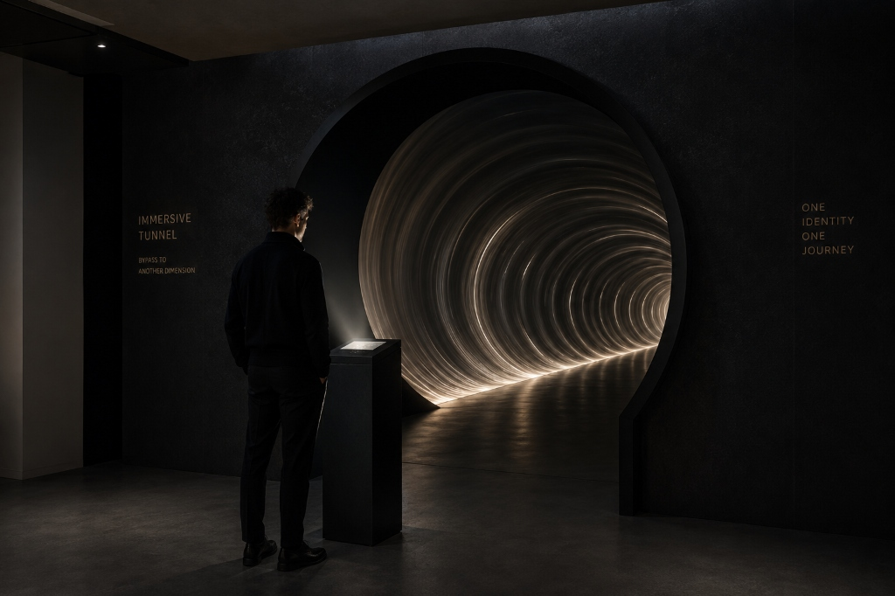
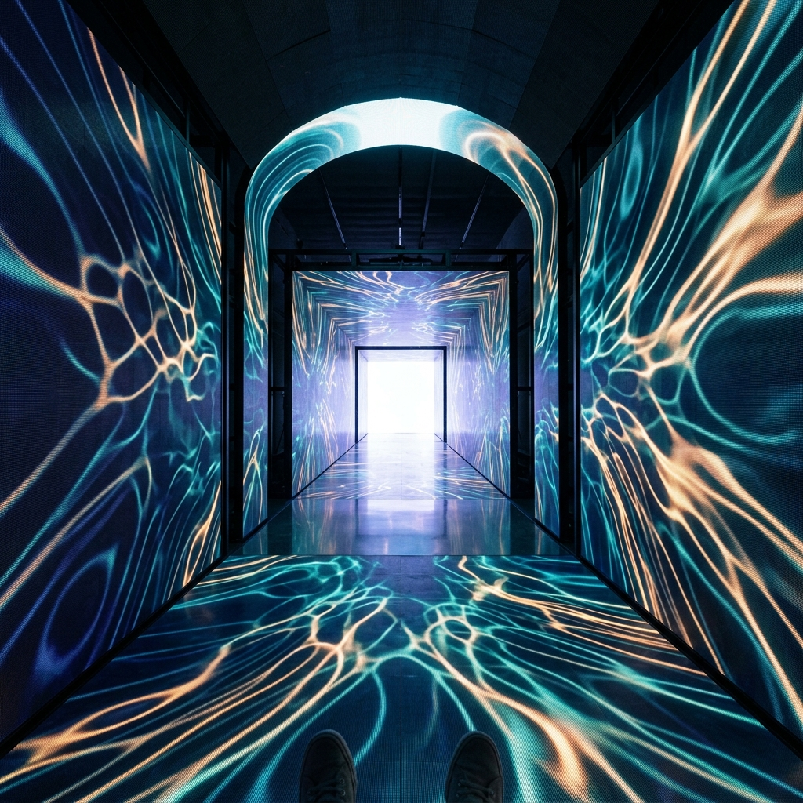
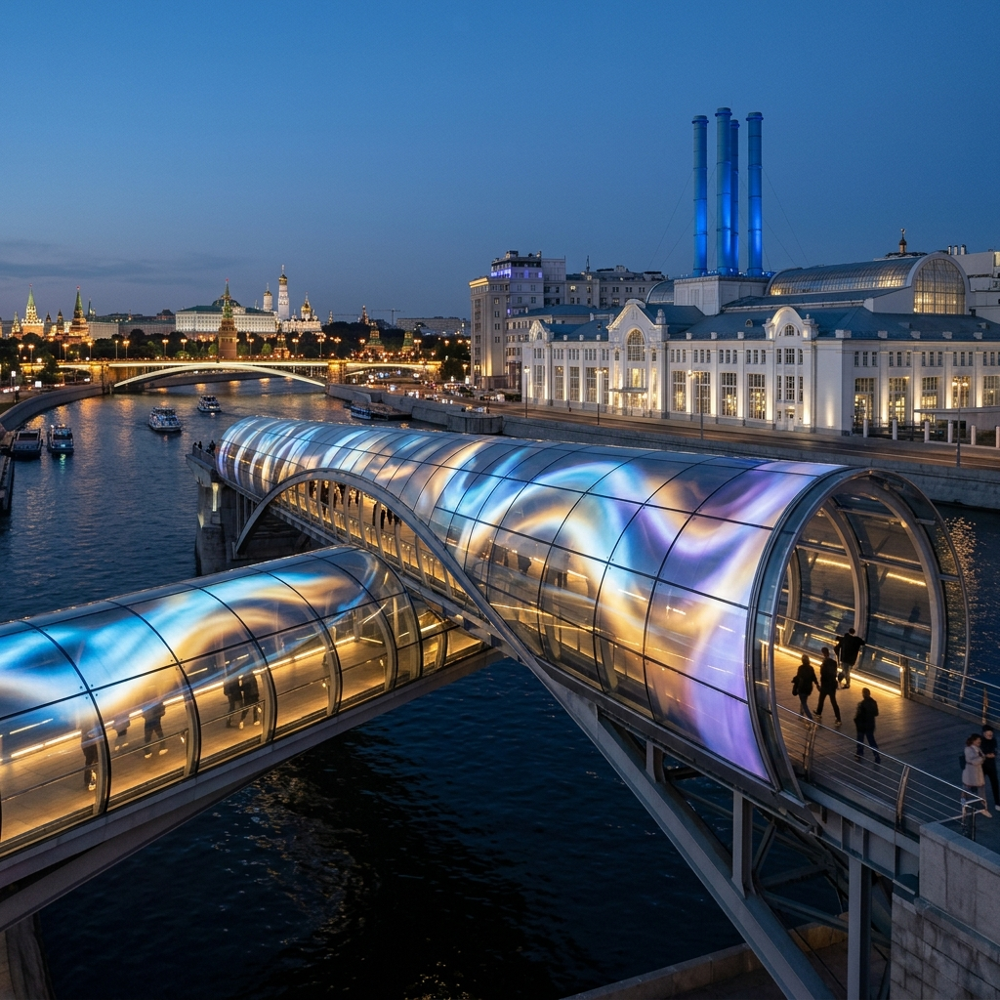
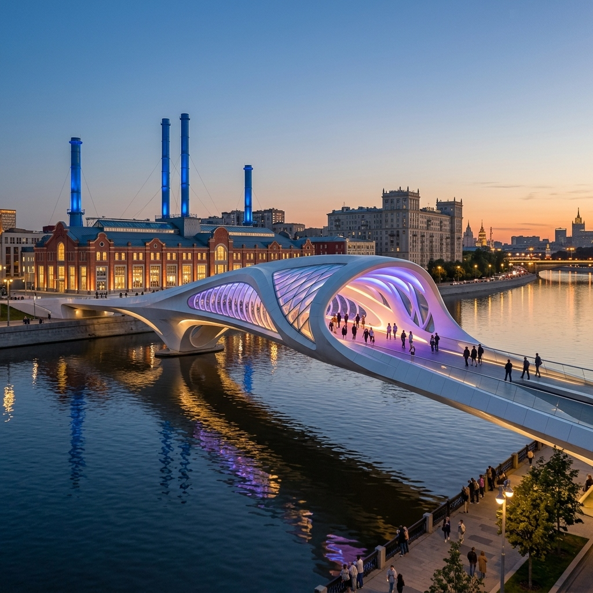
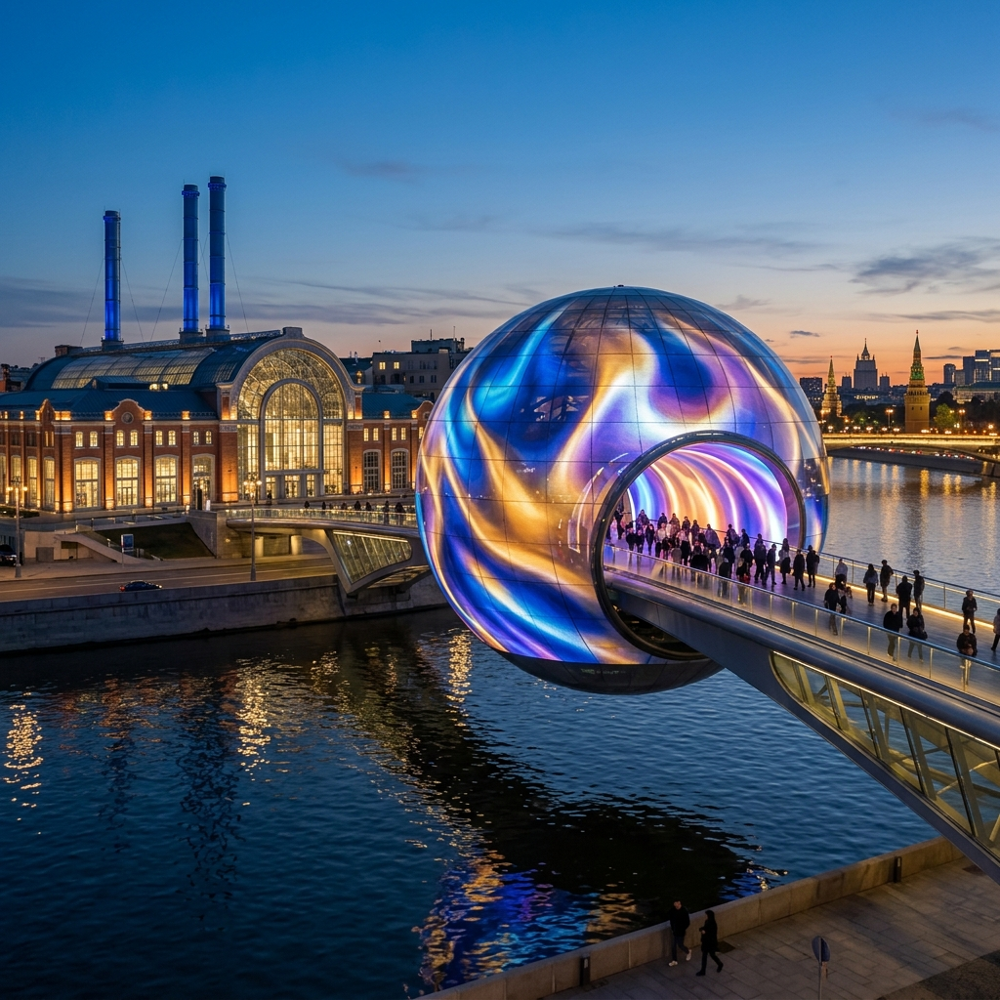
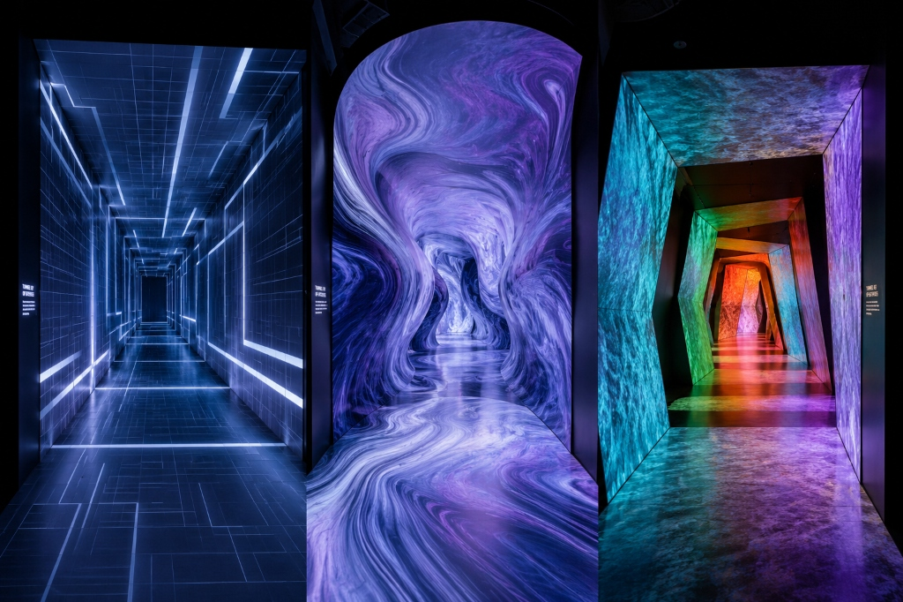
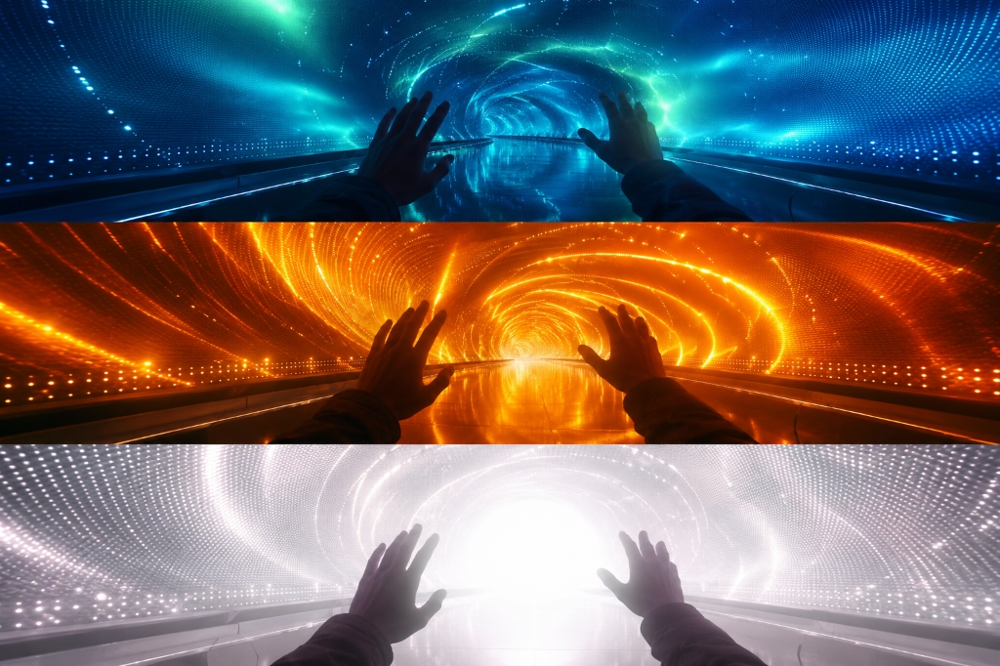
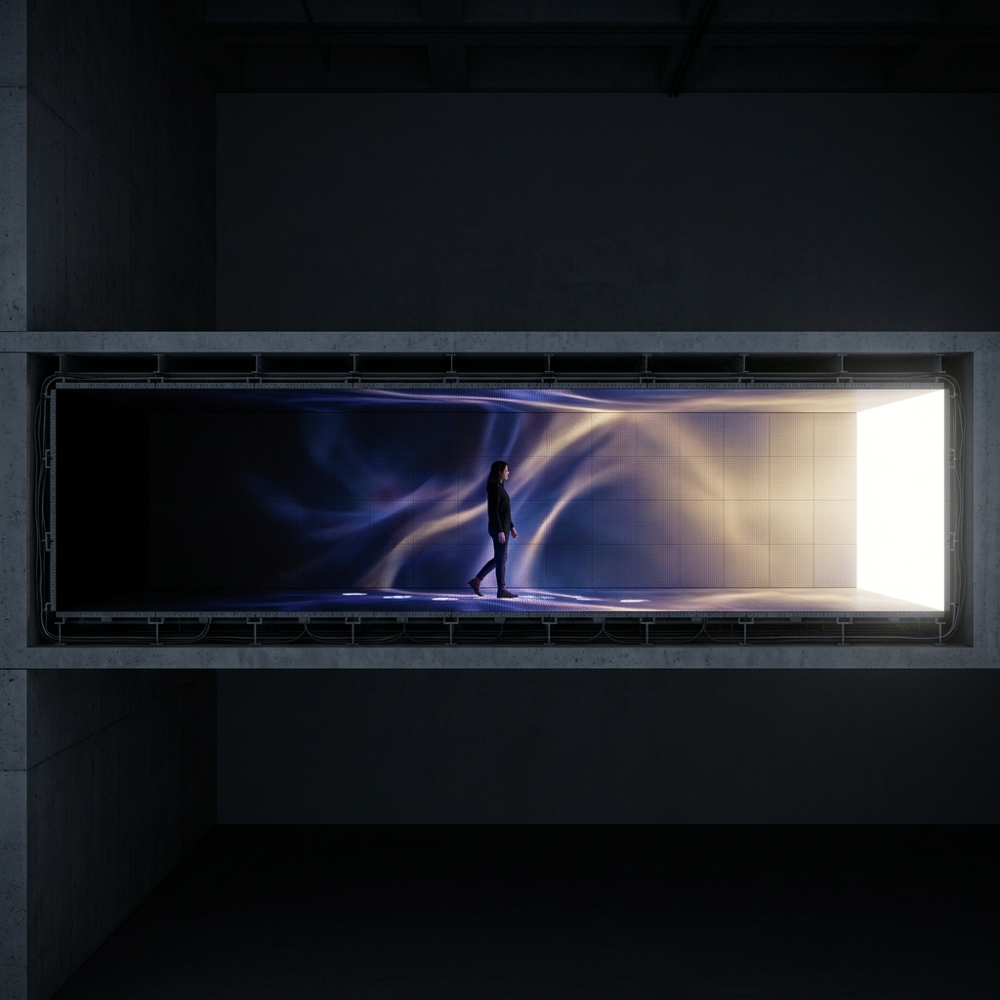
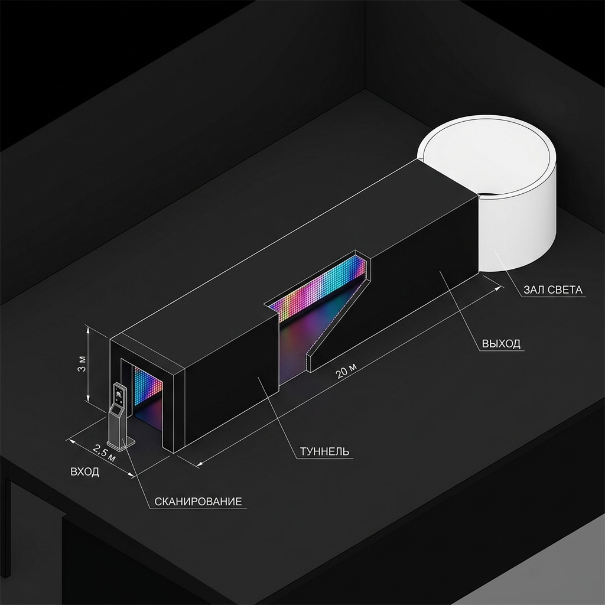
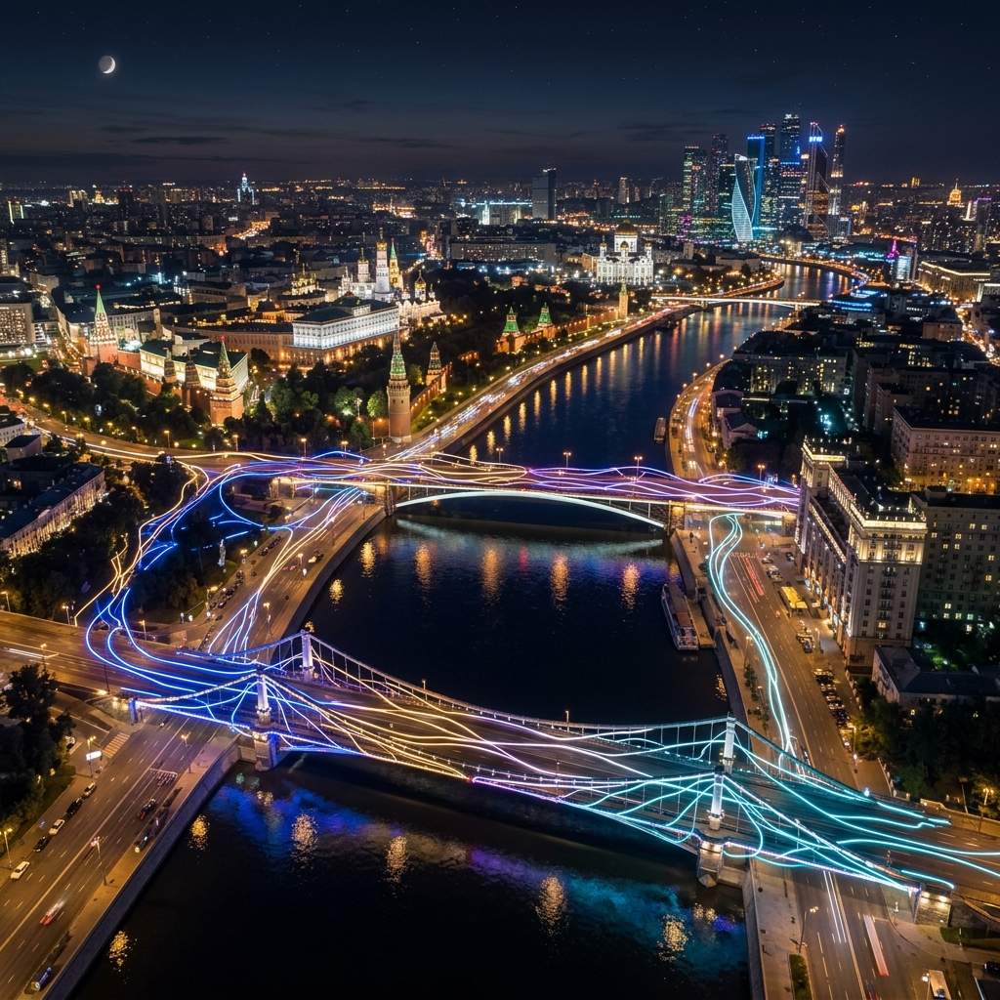

Архитектурный свето-акустический шлюз, трансформирующий психоэмоциональное состояние через физическое пространство, квантовую оптику и биометрию.
«Не беги. Скоро всё закончится»
Современный человек живет в состоянии постоянного информационного шума. Приходя в музей, театр или библиотеку, он приносит этот шум с собой. Его внимание рассеяно, его мозг перегружен.
Нейротуннель «Туннель Состояний» спроектирован в стиле Эмотех (Emotech / Emotional Tech) — эмоционально-активной архитектуры, реагирующей на состояние человека. Объединяя биоморфные конструкции или геометрию прямоугольной призмы от Алёны Левицкой (бюро «СТРУКТУРА») и физические алгоритмы Валерия Латыпова, мы создали адаптивный фильтр.
Пространство считывает биометрию входящего человека и ведёт его через метафорический **жизненный цикл** — от сенсорной тишины «рождения», сквозь свето-звуковой опыт взаимодействия с пространством, к «символической смерти» (визуальному сбросу белым светом) и финальному возрождению в состоянии чистого баланса и покоя.

3D-визуализация иммерсивного прохода и интеграции объекта в урбанистическую среду Москвы.
Мост у ГЭС-2 работает как эмоциональный завлекающий портал, который бесшовно перетекает в масштабную внутреннюю экспозицию.
Входная точка и первый фильтр внимания. Переходя реку, посетитель вовлекается в световую игру, датчики плавно считывают биометрию, подготавливая его к глубокому погружению. Это витрина выставки, видимая со всех набережных.
Основное пространство. Темные подземные залы ГЭС-2 представляют собой идеальное место для инсталляции. Посетитель спускается в тишину и полумрак, где проходит через 20-метровый индивидуальный туннель состояний, завершая путь в зале катарсиса.
Монументальная доминанта. Размещение огромного параметрического туннеля на главном проспекте (атриуме) ГЭС-2. Гигантский объект из белых биоморфных ребер становится центральной скульптурой, реагирующей на общее состояние людей в здании.
Почувствуйте, как работает пространство. Выберите ваше текущее состояние ниже и включите звук, чтобы прослушать гармонизирующую частоту.
Биометрические сенсоры и бесконтактное считывание пульса определяют доминантную частоту вашего состояния.
Стены, пол и потолок генерируют световые волны и акустический фон, компенсирующие разбаланс систем тела.
В конце коридора все паттерны переходят в чистый белый свет, перезагружая визуальное восприятие.
Вы получаете видеозапись вашего уникального светового пути и карту состояний прямо на смартфон.
Проект адаптируется под любые масштабы — от локальных интерьерных B2B-модулей до крупных архитектурных решений, интегрированных в инфраструктуру ГЭС-2.

Свето-акустический шлюз (10 метров) в форме прямоугольной призмы для интеграции в интерьеры культурных институций, штаб-квартир компаний или арт-пространств. Конструкция использует современные бесшовные LED-экраны со стыковкой под 90 градусов, создавая эффект чистого цифрового кристалла. Облегченный каркас собирается за 48 часов.

Надстройка над существующим пешеходным мостом ГЭС-2. Облегченный стеклянный полусферический купол («колбаса») с внешней прозрачной LED-сеткой. Не нарушает несущие конструкции моста и эстетично вписывается в архитектурный контекст.
Футуристический пешеходный мост-галерея, спроектированный в плавном бионическом стиле Захи Хадид. Аэродинамические кривые конструкции из белого полимера, бесшовное остекление и иммерсивный адаптивный туннель внутри.

Пешеходный переход с изящным сферическим куполом в центральной части. Сфера выступает в качестве пространственного портала и главного терапевтического шлюза, создавая яркий визуальный ориентир на водном зеркале реки.

Экстравагантный проект с гигантской LED-сферой (по технологии MSG Sphere). Внешний 360° медиа-фасад отражает суммарное психоэмоциональное состояние прохожих, транслируя его на город, а внутренний купол дарит глубокий катарсис.
Существующие световые и нейро-инсталляции (например, Aura Ника Верстанда или Tunnel of Sentient Light Ива Пейтцнера) работают исключительно как пассивные зеркала — они лишь считывают и визуализируют текущие биоритмы и стресс человека.
Нейротуннель работает как активный балансир. Алгоритмы не просто показывают вашу тревогу, а создают компенсирующее воздействие: если вы в стрессе, система подбирает успокаивающие частоты звука (тета-ритмы 4–7 Гц) и холодный синий свет. При апатии — бодрящий золотой спектр и бета-ритмы.
Вместо неудобных EEG-шлемов или физических датчиков, считывание данных происходит на ходу. Камеры отслеживают микро-пульсацию сосудов лица (rPPG) и мимику (Face Mesh), не мешая движению человека.
При массовом проходе система проецирует индивидуальные световые ауры вокруг каждого человека. При встрече или сближении цвета аур плавно смешиваются, исключая какофонию и создавая визуальный диалог.
Все биометрические показатели обрабатываются исключительно в оперативной памяти в реальном времени. Персональные данные, фото или видеосъемка лиц не сохраняются и не передаются во внешние сети.
Бесконтактный пульс: Камера фиксирует едва заметные глазу изменения цвета кожи лица, вызванные притоком крови в сосуды при каждом ударе сердца. На основе этого вычисляются ЧСС и вариабельность ритма (HRV), оценивая уровень стресса.
Нейросетевой анализ лица: Модели компьютерного зрения в реальном времени анализируют 468 опорных точек лица, считывая микронапряжение мышц лба, глаз и рта, определяя до 8 базовых эмоциональных состояний.
Сверхнаправленный звук: Звуковые частоты баланса транслируются через специальные акустические линзы (параболические динамики), локализуя терапевтический эффект строго над проходящим человеком.




Концепция масштабирования: интеграция свето-акустических шлюзов в масштабе всей Москвы. От точечных мостов до глобальной сети небоскребов Москва-Сити и линий метрополитена.

Связь ключевых пешеходных и автомобильных переходов центра столицы в единый живой контур. Световые волны транслируются вдоль воды, отражая динамику движения и эмоциональный фон жителей в реальном времени.
Глобальный супер-вижн: интеграция датчиков метрополитена и медиа-фасадов небоскребов Москва-Сити. С высоты полета или из космоса город выглядит как единый гигантский синаптический узел, пульсирующий в такт дыханию миллионов людей.
«Мегаполис превращается из источника стресса в саморегулирующийся терапевтический организм. Свет и звук объединяют миллионы жителей в один гармоничный ритм, видимый на масштабах всей планеты»